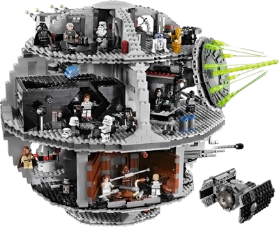

Introduction
API stands for Application Programming Interface and it is a set of tools, functions and provides excellent basic building blocks to build from. This allows a developer to have access to this "library" of resources without needing to know the mechanics behind everything. In this way we can readily build up a program, application or parts quickly to make something of our own.
In this case we'll be accessing some of the great information and data that NASA has avaiable on their API.
For further reading about APIs check out these pages:
Wikipedia Article
Stackoverflow Article
Think of an API like lego blocks. Each block has certain properties, such as size, shape, color. In our case though each block could be seen as a call to the API for a certain set of data, through a query. Some blocks may only connect to other blocks in a specific order or as in our case if the correct information is received. Then when you have all the correct building blocks you can build something awesome like this!
JSON, pronounced , or JavaScript Object Notation is an open standard format that is used to transmit data objects in such a way that it is easily read and written by us, humans. Now JSON is could be considered one of the most common methods to transmit data to and from an API.
For an excellent description of JSON perform a Hohmann Transfer to json.org.
In the example we create two new javascript objects, the first is in JSON notation and the second in standard javascript notation. In javascript accessing elements is very forgiving.
We can use dot notation as in JSONobj.foo or with brackets
and a string as in JSONobj["key"].
The critical thing to remember in all of this is that a JSON object's keys must be enclosed in double quotes "". Whereas a javascript object does not have this requirement.
The other important thing to remember is that the value side of JSON notation may only contain a string, number, object, array, or bool. Whereas a javascript object may contain a function.
Luckily JSON gives us a great tool to convert any javascript object
to the JSON format with the use of the stringify() method.
In this example we only have a single object in javascript notation, first we just try to output the javascript object to an html element. Resulting as expected the output stating it is an [object Object].
Then we see that after calling JSON.stringify() on our object
we can now output the entire object as a long string to the element "stringy".
The NASA API will return JSON notation objects so we'll need to call
JSON.parse() on them in order to
access the data contained inside. As shown in the example once we parse
the stringified object, we are able to once again access the elements inside.
Using dot notation or brackets and a string.